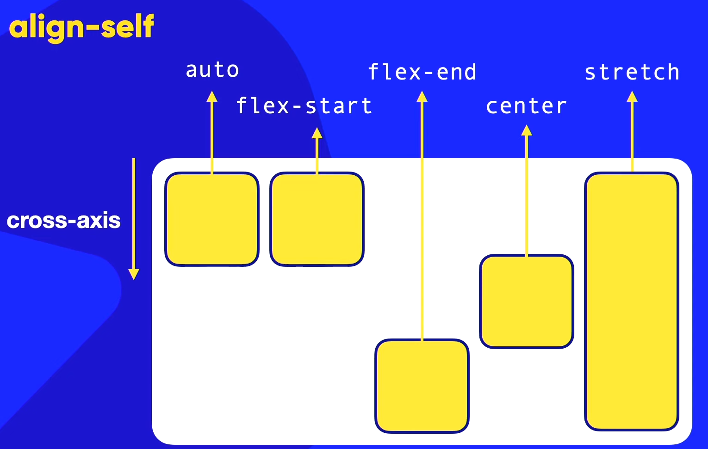

Flex-container: (elemento pai)
Eixos
Flex-direction:
Direção deitada na horizontal:
- row: (Deitado (horizontal) da esquerda pra direita)
- row reverse: (Deitado (horizontal) da direita para esquerda )
- colum: (Em pé (vertical) de cima para baixo)
- colum-reverse: (Em pé (vertical) de baixo para cima)
Flex-wrap:
Direção em pé na vertical:
- nowrap: Não quebra linha
- wrap: Quebra de linha para caber conteúdo para baixo
- wrap-reverse: Quebra de linha para caber conteúdo para cima
Flex-flow:
Usa-se o flex-flow como uma junção de flex-direction e flex-wrap ao mesmo tempo: sendo a primeira opção é a configuração da horizontal e a segunda opção é da configuração na vertical.
Alinhamento de counteúdo
Justify-content:
Usa-se o justify-content para fazer o alinhamento do conteúdo no main-axis
- Start: Tem o direcionamento do main-axis do começo para o fim
- End: Tem o direcionamento do main-axis do fim para o começo
- Center: Vai alinhar tudo no meio do main-axis distribuindo o conteúdo por todo o container
- Space-between: Coloca o primeiro item no main-start e o último item no main-end e centralizando o resto do conteúdo com espaçamento igual
- Space-evenly: Todos os espaçamento do conteúdo tem o mesmo tamanho no main-axis
- space-around: Vai pegar o valor total do container e dividir igualmente entre os elementos dentro do container no main-axis

Align-items:
Usa-se o Align-items para fazer o alinhamento da caixa do cross-axis
- Start: Tem o direcionamento do cross-axis do começo para o fim
- End: Tem o direcionamento do cross-axis do fim para o começo
- Center: Vai alinhar tudo no meio do cross-axis distribuindo o conteúdo por todo o container
- Space-between: Coloca o primeiro item no cross-start e o último item no cross-end e centralizando o resto do conteúdo com espaçamento igual
- Space-evenly: Todos os espaçamento do conteúdo tem o mesmo tamanho.
- space-around: Vai pegar o valor total do container e dividir igualmente entre os elementos dentro do container
Align-content:
Vai alinhar o conteúdo dentro do cross-axis dentro do espaço da caixa
- Streatch: Estica o conteúdo dentro do espaço proposto
- Flex-start: Pegar todos os elementos e colocar grudados no cross-start e o cross-end ficando livre
- Flex-end:Pegar todos os elementos e colocar grudados no cross-end e o cross-start ficando livre
- Center: Pega todo o conteúdo e centraliza
- Space-between: Coloca o primeiro item no cross-start e o último item no cross-end e centralizando o resto do conteúdo com espaçamento igual
- Space-evenly: Todos os espaçamento do conteúdo tem o mesmo tamanho no cross-axis
- space-around: Vai pegar o valor total do container e dividir igualmente entre os elementos dentro do container no cross-axis
Align-self:
Serve somente para container "filhos" e não container "pais"

Order:
Todo item dentro da flex-box vai ter order:0 por padrão e ele é organizado por ordem crescente, exemplo:

Ficando em ordem crescente:

Flex-items (elemento filho(conteudo))
Flex-basis
A largura dos itens para cada elemento é dada pelo seu conteúdo e o flex-basis serve justamente para dizer o tamanho da base do conteúdo.
- flex-grow:Tamanho 0 e 1, siginifica que o conteúdo pode crescer
- flex-shrink:Tamanho 0 e 1, significa que o conteúdo pode encolher
Propriedade: flex
A propriedade flex tem como base automática o grow + shrink + basis:

flex: initial é igual a flex: 0 1 auto;
flex: none é igual a flex 0 0 auto;
flex: auto é igual a flex: 1 1 auto;